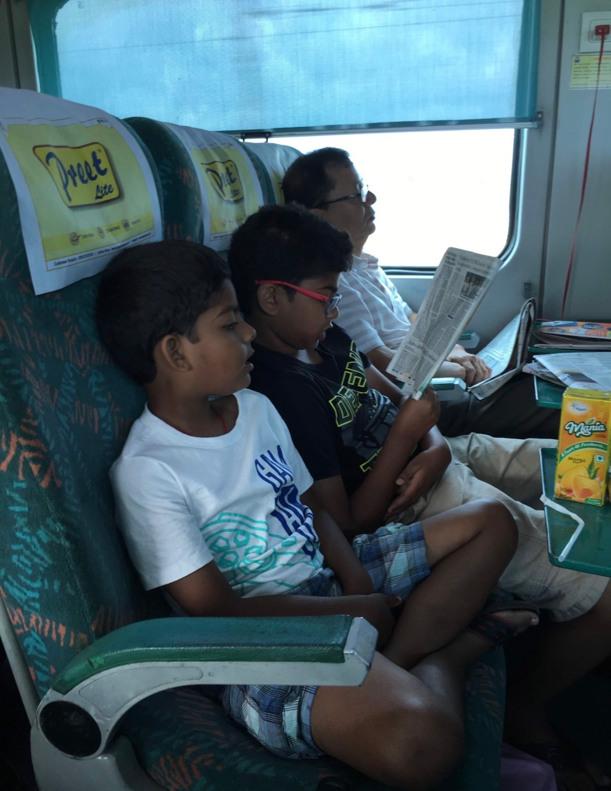

The story
During middle childhood, I still lived in Issaquah with my family. I enjoyed going to the library and reading, especially the Big Nate books. I liked Big Nate because the stories felt relatable and made me laugh.
I also liked science experiments and finding out how things worked. One experiment I remember was using dye to try to change the color of flower petals. The petals turned blue. Looking back, I understand that the dye traveled with the water through tiny tubes in the stem called xylem and reached the petals. As water evaporates from a flower, more water is pulled up the stem. (Museum of Science, 2024) Books and experiments gave me new ways to look for answers instead of only exploring what was right in front of me.

Connections to the textbook
1. Piaget’s concrete operational stage
Piaget described middle childhood as a time when children become better at logical thinking about real objects and events.
In the flower experiment, I watched the petals turn blue and thought about how the dye reached them. This connects to the logical thinking about real objects that Piaget described. (Riser et al., 2024, Section 7.2)
2. Reading and language development
During middle childhood, children build vocabulary and become better at reading and understanding language.
Reading Big Nate and other books gave me practice following stories and understanding words in context. I read for fun, but it also gave me a way to explore ideas on my own. (Riser et al., 2024, Section 7.5)
3. Erikson’s industry versus inferiority
In this stage, children work on skills and develop a sense of ability. Progress and encouragement can help them feel capable, while repeated difficulty or comparison can make them feel less capable.
Seeing the flower petals turn blue gave me a result I could notice for myself. Reading books and doing experiments gave me chances to finish something and feel capable. This connects to industry: building confidence through learning and completing tasks. It does not mean I never struggled, but these interests gave me areas where I could practice and improve. (Riser et al., 2024, Section 8.1)
Family, culture, and surroundings
My parents, brother, and grandparents were still important parts of my life. Temple visits and family time kept me connected to our traditions.
Living in Issaquah gave me access to a library and books. Those resources helped me follow my interests. My curiosity mattered, but having places and materials to explore mattered too. Without that access, learning on my own might have been harder.
Looking back
I used to think of reading and experiments as things I enjoyed doing. Now I see how they also gave me practice understanding information and solving problems. I was starting to find answers for myself.